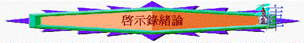

「耶穌基督的啟示，就是神賜給他，叫他將必要快成的事指示他的眾僕人。他就差遣使者曉諭他的僕人約翰。約翰便將神的道和耶穌基督的見證，凡自己所看見的都證明出來。」啟１：１－２
一．作者：約翰(１：１，２，４，９；２２：８)
〜應是使徒約翰，因他在１：９自稱在拔摩島上，跟初期教會傳說，
使徒約翰被羅馬皇放逐於拔摩島上完全吻合
〜早期教會都說本書是使徒約翰所寫
〜神透過他寄此書，也十分合理，理由如下：
１．他是其中一個最能描述主的人
〜他是主所愛的門徒，曾經跟過主，見過主的復活．也在島上遇
見主，他與主關係十分密切，由將關乎主的事描繪，最適合不過。
２．他是其中一個最能明白受苦人之感受的聖徒
〜此書主要對象似乎是受苦的聖徒，由約翰寫，最適合不過，因他和弟兄同愛苦難（１：９），最能明白他們的感受，他所說出的話也較有說服力！
二．時間
〜應是主後９０年，豆米仙為皇後期，理由如下：
１．早期教父愛任紐，亞歷山大的革利免都說，使徒約翰被豆米仙放逐於拔摩島上時寫啟示錄。
２．書內２－３章講述教會情況，不大似發生在初建立的教會，教會應已發展了一段年日。
三．對象
１．受苦聖徒
「我約翰就是你們的弟兄，和你們在耶穌的患難、國度、忍耐裡一同有分，為神的道，並為給耶穌作的見證，曾在那名叫拔摩的海島上。」１：９
「你們」──是指和約翰一同同受苦難的弟兄們
２．七間教會
「你所看見的當寫在書上，達與以弗所、士每拿、別迦摩、推雅推喇、撒狄、非拉鐵非、老底嘉、那七個教會。」１：１１
〜收信人也是當時位於亞西亞的七間教會（現今土耳其西部）
〜特別是教會的使者，神的僕人們
３．眾教會
「聖靈向眾教會所說的話，凡有耳的，就應當聽！得勝的，必不受第二次死的害。」
２：１１
〜不單是七教會，也是眾教會，包括我們也要聽
４．普世群體
「念這書上預言的和那些聽見又遵守其中所記載的，都是有福的，因為日期近了。」
１：３
「看哪，我必快來！凡遵守這書上預言的有福了！」２２：７
〜未信的人也適合，只要他肯念，肯看，肯守，此書也是他的書，亦是使他得福之書
四．背景
１．有人正受患難
「我約翰就是你們的弟兄，和你們在耶穌的患難、國度、忍耐裡一同有分，為神的道，並為給耶穌作的見證，曾在那名叫拔摩的海島上。」１：９
「我知道你的患難，你的貧窮（你卻是富足的），也知道那自稱是猶太人所說的毀謗話，其實他們不是猶太人，乃是撒但一會的人。」２：９
〜啟發：他們可能會問：「還要忍耐到幾時？」「值不值得繼續忍耐？」
本書又如何激勵他們繼續至死忠心，繼續等候呢？
２．有人離棄真道
「然而，有幾件事我要責備你：因為在你那裡有人服從了巴蘭的教訓；這巴蘭曾教導巴勒將絆腳石放在以色列人面前，叫他們吃祭偶像之物，行姦淫的事。」２：１４
〜啟發：有人在世界，患難中離開真道或退後，本書又如何令他們要快悔改，行回真理中？
３．撒但好像掌權
「我知道你的居所，就是有撒但座位之處；當我忠心的見證人安提帕在你們中間、撒但所住的地方被殺之時，你還堅守我的名，沒有棄絕我的道。」２：１３
「所以，諸天和住在其中的，你們都快樂吧！只是地與海有禍了！因為魔鬼知道自己的時候不多，就氣忿忿的下到你們那裡去了。龍見自己被摔在地上，就逼迫那生男孩子的婦人。」１２：１２－１３
〜啟發：魔鬼撒但在地上不斷逼迫、引誘信徒，牠是否至終掌權，得勝者呢？信徒在撒但權勢下是否繼續灰心，繼續不能勝過牠呢？
五．字眼：
１．本書多「守」「忍」「等」字眼，似乎要信徒在今世日子仍要忍耐等候，堅守神道（但有甚麼動力守神道呢？）
「聖徒的忍耐就在此；他們是守神誡命和耶穌真道的。」１４：１２
「大聲喊著說：「聖潔真實的主啊，你不審判住在地上的人，給我們伸流血的冤，要等到幾時呢？」」６：１０
２．本書亦多提及「羔羊」至少３１次，有「羔羊」「羔羊的血」「羔羊的歌」「羔羊的寶座」「羔羊的忿怒」「羔羊生命冊」，似乎被殺羔羊在啟示錄的位置是十分重要，不可缺少的
「我又看見寶座與四活物，並長老之中有羔羊站立，像是被殺過的，有七角七眼，就是神的七靈，奉差遣往普天下去的。」５：６
「凡住在地上、名字從創世以來沒有記在被殺之羔羊生命冊上的人，都要拜他。」
「拿著七個金碗、盛滿末後七災的七位天使中，有一位來對我說：「你到這裡來，我要將新婦，就是羔羊的妻，指給你看。」」２１：９
「以後再沒有咒詛；在城裡有神和羔羊的寶座；他的僕人都要事奉他。」２２：３
３．另外，相反也多講及「獸」「撒但」「魔鬼」「龍」和羔羊（獸與羔羊）有強烈對比，究竟至終「獸」得勝，還是「羔羊」得勝呢？
「大龍就是那古蛇，名叫魔鬼，又叫撒但，是迷惑普天下的。他被摔在地上，他的使者也一同被摔下去。」１２：９
「我看見獸的七頭中，有一個似乎受了死傷，那死傷卻醫好了。全地的人都希奇跟從那獸，又拜那龍，因為他將自己的權柄給了獸，也拜獸，說：「誰能比這獸，誰能與他交戰呢？」」１３：３－４
４．「我必快來」「快」「時候到了」「近」等時間逼切性的字眼也很多，似乎要突顯末世快成的事將到了
「念這書上預言的和那些聽見又遵守其中所記載的，都是有福的，因為日期近了。」１：３
「我必快來，你要持守你所有的，免得人奪去你的冠冕。」３：１１
「我們要歡喜快樂，將榮耀歸給他。因為，羔羊婚娶的時候到了；新婦也自己預備好了。」１９：７
５．「證明」「作見証」「看見」「聽見」「真」「可信」等證實性字眼亦多，作者也要藉他所看見所聽見的事，證明主所啟示的真確性
「約翰便將神的道和耶穌基督的見證，凡自己所看見的都證明出來。」１：２
「我約翰就是你們的弟兄，和你們在耶穌的患難、國度、忍耐裡一同有分，為神的道，並為給耶穌作的見證，曾在那名叫拔摩的海島上。」１：９
「所以你要把所看見的，和現在的事，並將來必成的事，都寫出來。」１：１９
「我又看見且聽見，寶座與活物並長老的周圍有許多天使的聲音；他們的數目有千千萬萬。」５：１１
「天使又對我說：「這些話是真實可信的。主就是眾先知被感之靈的神，差遣他的使者，將那必要快成的事指示他僕人。」」２２：６
６．「權柄」「寶座」「冠冕」「榮耀」「頌讚」也常提及，究竟真正的權柄，真正值得頌讚的王者是誰呢？如何顯出？
「我們的主，我們的神，你是配得榮耀、尊貴、權柄的；因為你創造了萬物，並且萬物是因你的旨意被創造而有的。」４：１１
「大聲說：曾被殺的羔羊是配得權柄、豐富、智慧、能力、尊貴、榮耀、頌讚的。」
「說：阿們！頌讚、榮耀、智慧、感謝、尊貴、權柄、大力都歸與我們的神，直到永永遠遠。阿們！
「那二十四位長老與四活物就俯伏敬拜坐寶座的神，說：阿們！哈利路亞！」１９：４
「你所看見的當寫在書上，達與以弗所、士每拿、別迦摩、推雅推喇、撒狄、非拉鐵非、老底嘉、那七個教會。」１：１１
「我必快來，你要持守你所有的，免得人奪去你的冠冕。」３：１１
「天使又對我說：「這些話是真實可信的。主就是眾先知被感之靈的神，差遣他的使者，將那必要快成的事指示他僕人。」「看哪，我必快來！凡遵守這書上預言的有福了！」」
「看哪，我必快來！賞罰在我，要照各人所行的報應他。」２２：１２
「證明這事的說：「是了，我必快來！阿們！主耶穌啊，我願你來！」２２：２０
〜本書開始至結尾已講出此書的主要內容，是將末後必快成的事──特別是指主回來快成的事講明。
１．「主」 -->真正的主角
〜末後快成的事或本書的主角是主，是羔羊，因為他是
ａ．永恆計劃中的關鍵者
i.是開始者
「他們唱新歌，說：你配拿書卷，配揭開七印；因為你曾被殺，用自己的血從各族、各方、各民、各國中買了人來，叫他們歸於神。」５：９
「我看見羔羊揭開七印中第一印的時候，就聽見四活物中的一個活物，聲音如雷，說：「你來！」」６：１
ii.是參與者
〜流血
〜發怒
「向山和巖石說：「倒在我們身上吧！把我們藏起來，躲避坐寶座者的面目和羔羊的忿怒。」」６：１６
〜審判
「他穿著濺了血的衣服；他的名稱為神之道。在天上的眾軍騎著白馬，穿著細麻衣，又白又潔，跟隨他。有利劍從他口中出來，可以擊殺列國。他必用鐵杖轄管（轄管：原文作牧）他們，並要踹全能神烈怒的酒醡。」１９：１３－１５
iii.是成就者
「又使我們成為國民，作他父神的祭司。但願榮耀、權能歸給他，直到永永遠遠。阿們！」１：６
「「看哪，我必快來！賞罰在我，要照各人所行的報應他。我是阿拉法，我是俄梅戛；我是首先的，我是末後的；我是初，我是終。」」２２：１２－１３
iv.是核心者
「我們要歡喜快樂，將榮耀歸給他。因為，羔羊婚娶的時候到了；新婦也自己預備好了。」１９：７
「我未見城內有殿，因主神全能者和羔羊為城的殿。那城內又不用日月光照；因有神的榮耀光照，又有羔羊為城的燈。」２１：２２－２３
〜真正在婚筵，在天家，聖城的主角是良人，是我們的主，是被殺的羔羊！
ｂ.世界權勢中的至高者
〜啟示錄題及在末後有很多王與國，但至終的的掌權者是誰呢？乃是我們的主！
「你所看見的那十角就是十王；他們還沒有得國，但他們一時之間要和獸同得權柄，與王一樣。們同心合意將自己的能力、權柄給那獸。他們與羔羊爭戰，羔羊必勝過他們，因為羔羊是萬主之主、萬王之王。同著羔羊的，就是蒙召、被選、有忠心的，也必得勝。」１７：１２－１４
ｃ.靈界勢力中的得勝者
〜撒旦似乎在世界國度中掌權，但最後勝利審判者仍是耶穌基督
「那獸被擒拿；那在獸面前曾行奇事、迷惑受獸印記和拜獸像之人的假先知，也與獸同被擒拿。他們兩個就活活的被扔在燒著硫磺的火湖裡；其餘的被騎白馬者口中出來的劍殺了；飛鳥都吃飽了他們的肉。」１９：２０－２１
ｄ.屬神兒女中的所盼者
〜信徒在世或許有逼迫，患難，但主仍是我們所盼望的，主快回來也是我們在世生活的推動力
「證明這事的說：「是了，我必快來！阿們！主耶穌啊，我願你來！」２２：２０
２．「必」 -->真確的啟示
〜「主必快來」不是抽象而不會發生的事，約翰用「看見」「聽見」用很多証明，表達出主「必」回來，是真實的，是可信的，是他可以作見証的！
「約翰便將神的道和耶穌基督的見證，凡自己所看見的都證明出來。」１：２
３．「快來」 -->快來的信息
ａ．快來的意義
i.對信徒è忠心守道的動力
「我必快來，你要持守你所有的，免得人奪去你的冠冕。」３：１１
iii.對萬物è真正榮耀的驚嘆
〜萬物（世人，信徒，歷世歷代離去的人，天使，靈界）看見末後必快成的事，不能不讚嘆神的榮耀，智慧，能力，尊貴。）
「此後，我觀看，見有許多的人，沒有人能數過來，是從各國、各族、各民、各方來的，站在寶座和羔羊面前，身穿白衣，手拿棕樹枝，大聲喊著說：「願救恩歸與坐在寶座上我們的神，也歸與羔羊！」眾天使都站在寶座和眾長老並四活物的周圍，在寶座前，面伏於地，敬拜神，
ｂ．快來的情景（七印、七號、七雷、七碗）
i.可怕的氣氛
〜「七印」似乎揭開了審判的序幕，先帶出可怕的氣氛
「我看見羔羊揭開七印中第一印的時候，就聽見四活物中的一個活物，聲音如雷，說：「你來！」」６：１
「地上的君王、臣宰、將軍、富戶、壯士，和一切為奴的、自主的，都藏在山洞和巖石穴裡，向山和巖石說：「倒在我們身上吧！把我們藏起來，躲避坐寶座者的面目和羔羊的忿怒；因為他們忿怒的大日到了，誰能站得住呢？」」
ii.末後的警告
〜「七號」「七雷」似乎發出警告的聲音，要地上的人在主快回來前快悔改，否則就沒機會了
「第六位天使吹號，我就聽見有聲音從神面前金壇的四角出來，吩咐那吹號的第六位天使，說：「把那捆綁在伯拉大河的四個使者釋放了。」」９：１３－１４
「其餘未曾被這些災所殺的人仍舊不悔改自己手所做的，還是去拜鬼魔和那些不能看、不能聽、不能走，金、銀、銅、木、石的偶像，」９：２０
iii.傾盡的審判
〜「七碗」是最後的七災，是神大怒的傾盡，人不能不接受，人也沒可能逃避的！
「我又看見在天上有異象，大而且奇，就是七位天使掌管末了的七災，因為神的大怒在這七災中發盡了。」１５：１
iv.天地的更新
〜主快回來，除了有審判外，也是要更新，將天地改變，成了新天新地，榮美，無罪，快樂的地方
「我又看見一個新天新地；因為先前的天地已經過去了，海也不再有了。」
七．大綱
１．序幕 -->簡介與意義（１－３）
〜簡介「主必快來」的真實性，震撼性，及帶出書中的主旨與主角
〜也講及「主必快來」的意義：對眾教會的提醒與激勵
２．開始 -->展開與前奏（４－７）
〜末世計劃的展開，而引伸可怕忿怒的氣氛及前奏
３．中段 -->警告與剛硬（８－１１）
〜從災禍中發出警告，但人至終卻剛硬不悔
４．尾聲 -->刑罰與反抗（１２－２０）
〜指出及介紹刑罰的對象
〜描寫末後傾盡的審判與仇敵的反抗
５．結局 -->過去與更新（２１：1－２２：５）
〜天地的過去，一切的更新
６．結語 -->囑咐與回應（２２：６－２１）
〜總結全書的意義，帶出對信徒，世人的囑咐
〜作者對「主必回來」回應
|
主 必 快 來 |
|||||
|
序 幕 |
開 始 |
中 段 |
尾 聲 |
結 局 |
結 語 |
|
簡介與意義 |
展開與前奏 |
警告與剛硬 |
刑罰與反抗 |
過去與更新 |
囑咐與回應 |
|
1-3 |
4-7 |
8-11 |
12-20 |
21:1-22:5 |
22:6-21 |
八．真理
〜從啟示錄中我們可以認識很多寶貴真理
１．認識神永恆的計劃
ａ．計劃的重點──建立關係
「我聽見有大聲音從寶座出來說：「看哪，神的帳幕在人間。他要與人同住，他們要作他的子民。神要親自與他們同在，作他們的神。」２１：３
〜從創至啟，我們知道神永恆計劃的目的，是與人建立關係，與人同住，作他們的神，他們作祂的子民，起初，在創？？因罪失落了關係，神用揀選與人立約，至終想與人修補關係，到啟示錄，這重點終落實了！
ｂ．計畫的落實──有始有終
（ １ ）有創世記
è 有啟示錄
（ ２ ）有對以色列應許
è 至終他們得地土，得後裔，得作王
（ ３ ）有死亡
è 有復活
（ ４ ）有生命樹的禁入
è 至終可以吃
（ ５ ）有揀選
è 有迎娶
（ ６ ）任憑魔鬼在地上
è 最後被捆綁
（ ７ ）有過去
è 有更新
（ ８ ）有主升天
è 有主回來
（ ９ ）有教會在地上
è 有新婦的迎見主
（１０）有開始
è 有成了
（１１）神有忿怒
è
神有審判
（１２）有預備地方
è
有新耶路撒冷完成
〜神所作所說的不會「有頭沒尾」是至終認真，熱心成就一切事，祂是創始成終，信實落實的神！
ｃ．計劃的參與──萬事萬物
i.父神
〜祂是全能者，坐在寶座中，計劃成就一切
ii.羔羊
〜羔羊的流血，羔羊的展開，羔羊的再來
iii.天使
「我又看見另有一位大力的天使從天降下，披著雲彩，頭上有虹，臉面像日頭，兩腳像火柱。」１０：１
iv.聖徒
「另有一位天使，拿著金香爐來，站在祭壇旁邊。有許多香賜給他，要和眾聖徒的祈禱一同獻在寶座前的金壇上。那香的煙和眾聖徒的祈禱從天使的手中一同升到神面前。天使拿著香爐，盛滿了壇上的火，倒在地上；隨有雷轟、大聲、閃電、地震。拿著七枝號的七位天使就預備要吹。」８：３－６
v.萬物
〜萬事都互相效力，即使外邦國權，敵神者，撒但也在神的掌握中
ｄ．計劃的完美
〜單有創而沒有啟 -->人至終是悲哀
-->神榮耀不顯得完全
〜單有啟而沒有創 -->人至終不能學順服
～有創 及啟 -->就看到神的智慧，榮耀，完美
-->人可以真正認識神的永在，不變，能力，智慧
２．認識人生的至寶
ａ．至寶不是天地 -->因會廢去
ｂ．至寶不是冠冕 -->廿四位長老會放下
ｃ．至寶不是經歷 -->一切都會更新
ｄ．至寶不是性命 -->信徒肯捨命
ｅ．至寶不是聖殿 -->將來不見了聖殿
〜至寶是我們的主，我們的神
i.祂是永在，不會改變
ii.祂是新天新地的中心
iii.祂是約翰親眼看見，從心裏口裏說出願祂來的那位
３．認識大能的主宰
４．其它
九．注意
〜要能掌握啟示錄的真理，按正意分解裏面的道，要注意幾件事情
１．注意釋經
〜由於啟示錄裏面有很多似乎是超現實的圖畫，及象徵，我們在釋經上要小心，留意以下幾點
ａ．留意經文本身的真接解釋
〜若書中已清楚解釋那象徵是甚麼，我們便接納，不能隨意再另加解釋
e.g.「論到你所看見、在我右手中的七星和七個金燈臺的奧秘，那七星就是七個教會的使者，七燈臺就是七個教會。」１：２０
ｂ．很多經文所講的內容，曾在撒迦利亞書，以西結書，但以理，以賽亞書出現，嘗試多用參考以上經卷作補充
ｃ．很多書中的異象只是用比喻或一點誇張形容手法描寫，例如６：１２「日頭變黑像毛布」；毛布只是描述黑，不能強加解釋會有一塊毛布之類的意思。
２．注意思路
〜每一段接後一段，一定不是突然出現，和前文應有關係的，多留意其思路，多問為何前文講及這些事，但突然加插這段，有甚麼含意，多發問，思考，會增加我們對啟示本書的真理之認識。
e.g.啟示錄是講及將來必成的事，為何加插２－３章，當時教會的情況呢？
e.g.講及２－３章地上教會情況，為何突然跳到４章天上的景況呢？
３．注意對象
〜啟示錄所說的應許，審判，苦難，有時是同選民說的，有時同教會講，有時指頭是指向未信人，有時是同所有人說的，要分清楚，否則會胡亂將應許或苦難關鏈自己身上，產生不必要的恐慌或沒需有的盼望
４．注意幾個爭議性課題
〜信徒是在災前，災後，災中，部份被提呢？
〜敵基督是指誰？
〜啟中的巴比倫是否指天主教？
〜有否千禧年，在那時開始？